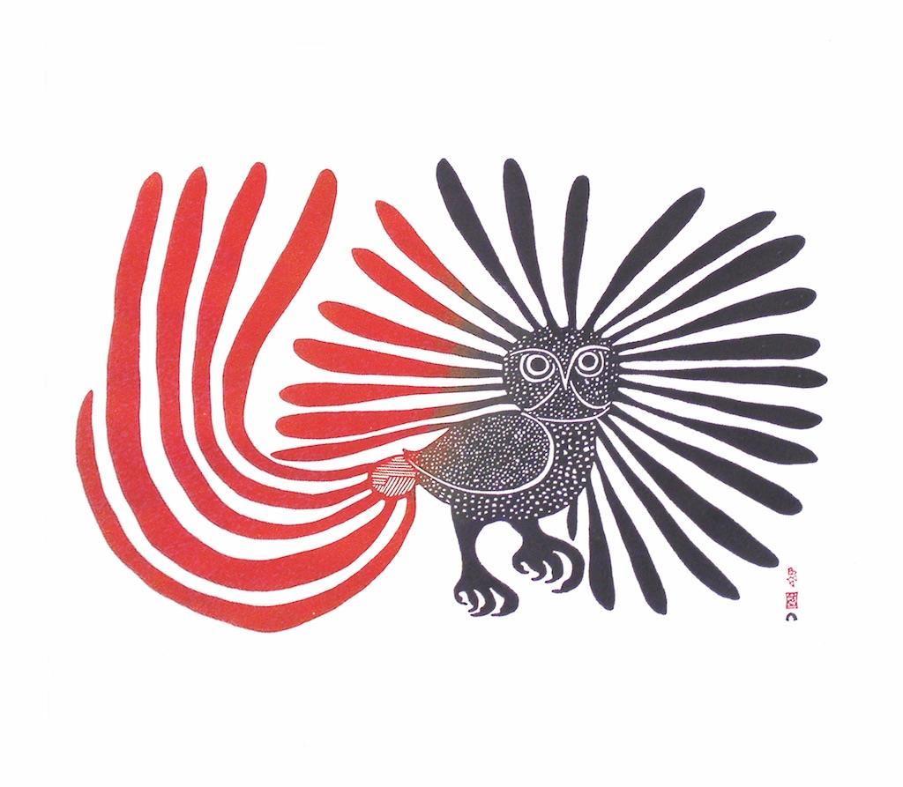
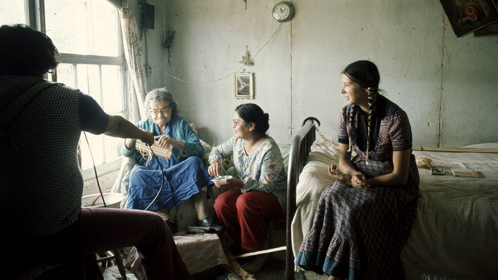

Kenojuak Ashevak ᕿᓐᓄᐊᔪᐊᖅ ᐋᓯᕙᒃ
Alanis Obomsawin
Christi Belcourt

This Website will showcase some amazing Indigenous artists from Canada!
Indigenous female artists have excelled in their chosen artistic mediums and hand crafts.
Kenojuak Ashevak ᕿᓐᓄᐊᔪᐊᖅ ᐋᓯᕙᒃ is an artist who made beautiful drawings and prints.
Alanis Obomsawin is an example of an artist who used film as her art-making medium.
Christi Belcourt created large paintings depicting natrual elements, such as flowers and other plants, in traditional beadwork style.